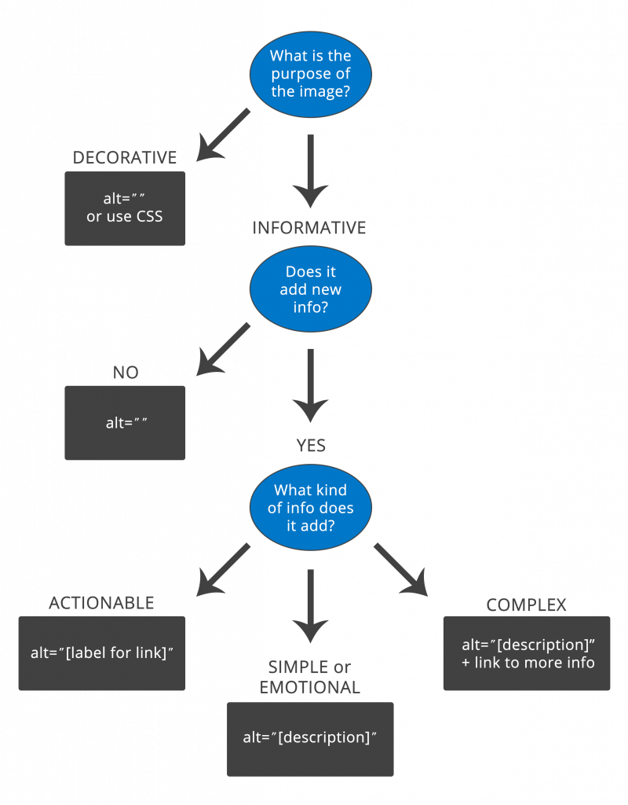

Alt text decision tree
This decision tree describes how to use the alt attribute of the <img> element in different situations. The decision tree does not cover all cases. For example, it does not cover MathML, groups of images, image maps and other alt text approaches for functional and complex images (e.g. aria-label, aria-labelledby, figcaption, etc). For detailed information on the provision of text alternatives, refer to the sections above.

Text description of the alt decision tree
- What is the purpose of the image?
- If decorative: Use
alt=""or use CSS - If informative: Go to step 2
- If decorative: Use
- Does it add new info?
- If no: Use
alt="" - If yes: Go to step 3
- If no: Use
- What kind of info does it add?
- If actionable: Use
alt="[label for link]" - If simple or emotional: Use
alt="[description]" - If complex: Use
alt="[description]"+ link to more info
- If actionable: Use